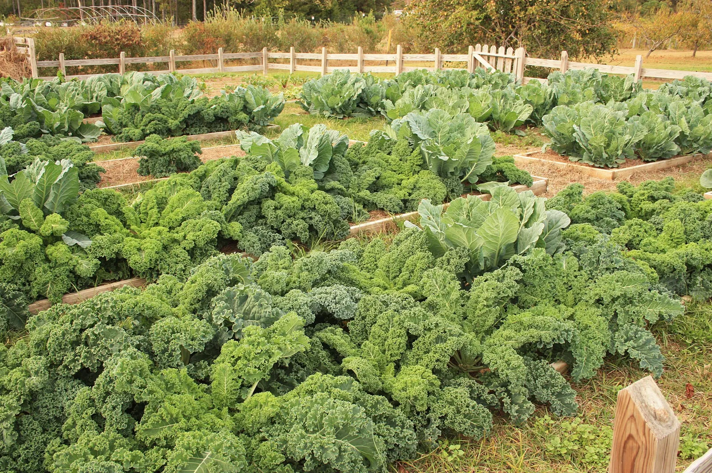

¿Todavía puedo sembrar esto? Los días que quedan antes de tu primera helada de otoño
En EE. UU., escribe tu código postal (ZIP); en cualquier otro lugar, el nombre de tu ciudad. La herramienta cuenta los días desde hoy hasta tu primera helada de otoño, con las probabilidades de la estación de NOAA más cercana, o, para una ciudad de fuera, las de una estación meteorológica cercana o de un modelo meteorológico. Luego ordena los cultivos según si todavía pueden terminar si siembras ahora: los que le ganan incluso a una helada temprana, las apuestas y los que ya se quedaron sin temporada. Un cultivo resistente, de los que aguantan una helada ligera, se cuenta en cambio hasta la primera helada fuerte, una noche de unos 28 °F (-2 °C). Donde la helada marca la temporada y los meses de aquí son demasiado frescos para un cultivo, o una siembra tardía maduraría en meses más frescos, lo dice junto al cultivo. Donde la helada es rara, enumera los cultivos de temporada ahora.

Por qué el extremo rápido del rango, y por qué la fecha de 1 de cada 10
Cada cultivo madura en un rango de días: un rábano en 22 a 30, una calabaza butternut en 90 a 110. Esta herramienta cuenta el extremo rápido más una semana de margen, porque ese es el mejor caso para una siembra tardía, con buen suelo, un otoño templado y ningún contratiempo. Lo compara con tu primera helada de otoño, que también es un rango de fechas. En la mitad de los años hiela para la fecha mediana, y 1 año de cada 10 la helada llega antes. Un cultivo que solo alcanza la mediana pierde contra una helada temprana algunos años, así que la fecha límite segura es la de 1 de cada 10.
Lo que esta herramienta no hace
No consulta ningún servicio del clima, no inventa una madurez para un cultivo que no tiene una registrada y no promete una cosecha. Los días a la cosecha cambian con el suelo, el clima y la variedad, y una fecha de primera helada es una probabilidad. Es una guía de fechas hecha con registros que muestra qué cultivos valen la apuesta.
Fechas de helada para tu código postal o tu ciudad · De dónde vienen las fechas · Todas las plantas